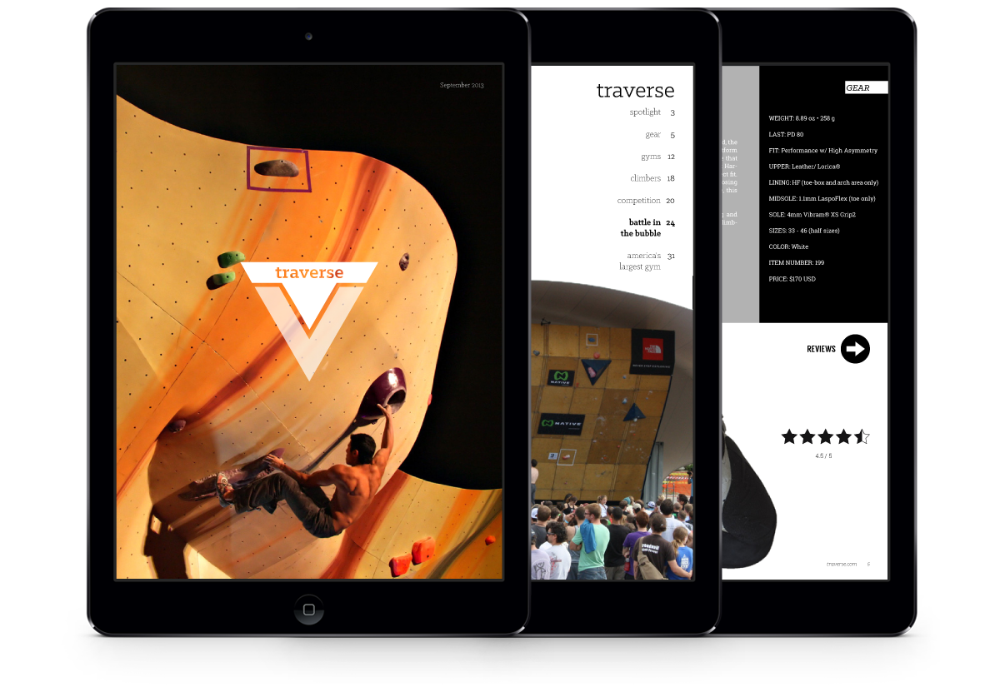

Traverse
History and Social Studies Curriculum
Traverse is a digital-forward, one-stop social studies curriculum with flexible, customizable content so teachers approach instruction with confidence and students experience engaging content in a variety of modalities to appeal to different learning styles.
Featuring dynamic and responsive learning experiences built around a library of more than 1,500 high-quality written, oral, and visual sources that create a rich story of the past.
Contributed Roles: Product Strategy + Project Management + UI/UX Design